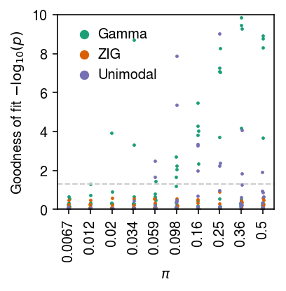
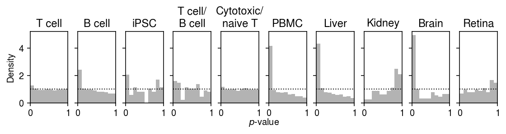

Goodness of fit of deconvolved distributions
Table of Contents
Introduction
We previously estimated the out-of-sample log likelihood as a measure of the generalization performance of distribution deconvolution methods for scRNA-seq. However, this is not the simplest way to support our key results:
- For spike-ins (control experiments), the data do not depart from a unimodal distribution for biological variation (meaning, neither technical variation nor biological variation involve a point mass on zero).
- For most genes, in most data sets, a Gamma assumption appears sufficient (meaning, the data do not significantly depart from the fitted model).
Here, we directly test for the goodness of fit of the estimated distribution (as in Sarkar et al. 2019).
Setup
import numpy as np import pandas as pd import scanpy import scmodes
import os import scipy.special as sp import scipy.stats as st import scqtl
%matplotlib inline %config InlineBackend.figure_formats = set(['retina'])
import matplotlib.pyplot as plt plt.rcParams['figure.facecolor'] = 'w' plt.rcParams['font.family'] = 'Nimbus Sans'
Methods
Test for goodness of fit
The key idea underlying our test for goodness of fit is the fact that if \(x_{i} \sim F(\cdot)\), then \(F(x_{i}) \sim \operatorname{Uniform}(0, 1)\). To test for goodness of fit of an estimated \(\hat{F}\) to the data \(x_{1}, \ldots, x_{n}\), we apply the Kolmogorov-Smirnov (KS) test to test whether the values \(\hat{F}(x_1), \ldots, \hat{F}(x_n)\) are uniformly distributed. (This test is slightly conservative because it uses the same data to estimate \(\hat{F}\).)
Here, we have to modify this simple procedure to account for the fact that our data are discrete counts, so \(F\) is not continuous. To address this issue, we used randomized quantiles (Dunn 1996): we sample one random value per observation \(u_{i} \mid x_{i} \sim \mathrm{Uniform}(\hat{F}(x_i - 1), \hat{F}(x_i))\). These have the property that if \(x_i \sim F\) then \(u_i \sim \mathrm{Uniform}(0, 1)\).
In our model, each observed UMI count \(x_{i}\) comes from a different distribution \(F_{i}\):
\[ F_i(x_i) = \sum_{k=0}^{x_i} \int_0^\infty \operatorname{Poisson}(k; s_i \lambda_i) g(d\lambda_i) \]
We therefore draw \(u_{i} \mid x_{i} \sim \mathrm{Uniform}(\hat{F}_{i}(x_{i} - 1), \hat{F}_{i}(x_{i}))\). Then, we apply the KS test to whether the randomized quantiles \(u_{i}\) are uniformly distributed.
Poisson-unimodal goodness of fit
We parameterized the Poisson-unimodal model as:
\begin{align*} x_i &\sim \operatorname{Poisson}(s_i \lambda_i)\\ \lambda_i &\sim \sum_k w_k \operatorname{Uniform}(\lambda_0, a_k) \end{align*}where we abuse notation to allow \(a_k < \lambda_0\). To test for goodness of fit, we need the PMF and CDF of \(x_i\), marginalized over \(\lambda_i\). These are analytic for certain choices of likelihood and prior, e.g. normal likelihood and mixture of uniforms prior.
Simulate a continuous example.
bhat = pd.Series(np.random.normal(loc=0.1, size=1000)) fitn = ashr.ash_workhorse(bhat, 1, mixcompdist='uniform', output=pd.Series(['loglik', 'fitted_g', 'data'])) # Important: Normal-uniform convolution CDF is analytic F = np.array(fitn.rx2('fitted_g').rx2('pi')).dot(np.array(ashr.comp_cdf_conv(fitn.rx2('fitted_g'), fitn.rx2('data'))))
st.kstest(F, 'uniform')
KstestResult(statistic=0.03101662170773789, pvalue=0.28605255994768175)
For the Poisson-unimodal model, we have (for one component):
\begin{align*} x_i &\sim \operatorname{Poisson}(s_i \lambda_i)\\ \lambda_i &\sim \operatorname{Uniform}(a, b) \end{align*}and:
\begin{align*} \Pr(x_i = x) &= \int_0^\infty \operatorname{Poisson}(x_i; s_i \lambda_i) \operatorname{Uniform}(a, b) d\lambda_i\\ &= \frac{1}{b - a} \int_a^b \operatorname{Poisson}(x_i; s_i \lambda_i) d\lambda_i\\ &= \frac{1}{s_i (b - a)} \int_a^b \frac{s_i^{x_i + 1}}{\Gamma(x_i + 1)} \lambda_i^{(x_i + 1) - 1}\exp(-s_i\lambda_i) d\lambda_i\\ &= \frac{1}{s_i (b - a)} \left( F_\Gamma(b; x_i + 1, s_i) - F_\Gamma(a, x_i + 1, s_i) \right)\\ \Pr(x_i \leq x) &= \sum_{k=0}^{x} \frac{1}{s_i (b - a)} \left( F_\Gamma(b; k + 1, s_i) - F_\Gamma(a, k + 1, s_i) \right)\\ \end{align*}where \(F_\Gamma(\cdot; \alpha, \beta)\) denotes the CDF of the Gamma distribution with shape \(\alpha\) and rate \(\beta\). The marginal PMF is analytic. Computing the CDF for each data point, for each component gives a matrix of values \(\mathbf{F} = [F_{ik}]\). Then, the marginal CDF of the data is given by \(\mathbf{F}\mathbf{w}\).
Simulate a simple discrete example.
y = pd.Series(np.random.poisson(lam=10, size=1000)) s = pd.Series(np.ones(y.shape)) fitp = ashr.ash_workhorse( np.zeros(y.shape), 1, lik=ashr.lik_pois(y=y, scale=s, link='identity'), mixcompdist='halfuniform', output=pd.Series(['loglik', 'fitted_g', 'data'])) scmodes.benchmark.gof._gof(y, cdf=scmodes.benchmark.gof._ash_cdf, pmf=scmodes.benchmark.gof._ash_pmf, fit=fitp, s=s)
KstestResult(statistic=0.018791616085501672, pvalue=0.8718125394494075)
Simulate a Poisson example with varying size factors.
mu = 1e-3 s = pd.Series(np.random.poisson(lam=1000, size=10000)) y = pd.Series(np.random.poisson(lam=s * mu)) fitp = ashr.ash_workhorse( np.zeros(y.shape), 1, lik=ashr.lik_pois(y=y, scale=s, link='identity'), mixcompdist='halfuniform', output=pd.Series(['loglik', 'fitted_g', 'data'])) scmodes.benchmark.gof._gof(y, cdf=scmodes.benchmark.gof._ash_cdf, pmf=scmodes.benchmark.gof._ash_pmf, fit=fitp, s=s)
KstestResult(statistic=0.008062709224521236, pvalue=0.533974089244596)
Data
def read_chromium(sample): x = scanpy.read('/project2/mstephens/aksarkar/projects/singlecell-modes/data/negative-controls/svensson_chromium_control.h5ad') x = x[x.obs['sample'] == sample] scanpy.pp.filter_genes(x, min_counts=1) x = x[:,x.var.filter(like='ERCC', axis='index').index] return pd.DataFrame(x.X.A, index=x.obs.index, columns=x.var.index) def read_dropseq(): x = scanpy.read('/project2/mstephens/aksarkar/projects/singlecell-modes/data/negative-controls/macosko_dropseq_control.h5ad') scanpy.pp.filter_genes(x, min_counts=1) x = x[:,x.var.filter(like='ERCC', axis='index').index] return pd.DataFrame(x.X.A, index=x.obs.index, columns=x.var.index) def read_indrops(): x = scanpy.read('/project2/mstephens/aksarkar/projects/singlecell-modes/data/negative-controls/klein_indrops_control.h5ad') scanpy.pp.filter_genes(x, min_counts=1) x = x[:,x.var.filter(like='ERCC', axis='index').index] return pd.DataFrame(x.X.A, index=x.obs.index, columns=x.var.index) def read_gemcode(): x = scanpy.read('/project2/mstephens/aksarkar/projects/singlecell-modes/data/negative-controls/zheng_gemcode_control.h5ad') scanpy.pp.filter_genes(x, min_counts=1) return pd.DataFrame(x.X.A, index=x.obs.index, columns=x.var.index) def read_c1(min_detect=1000): x = pd.read_csv('/project2/mstephens/aksarkar/projects/singlecell-qtl/data/ercc-counts.txt.gz', sep='\t', index_col=0) keep_samples = pd.read_csv('/project2/mstephens/aksarkar/projects/singlecell-qtl/data/quality-single-cells.txt', header=None, index_col=0, sep='\t') # Throw out samples with too few spike-in molecules detected return x.loc[:,np.logical_and((x.sum(axis=0) > min_detect).values, keep_samples.values.ravel())].T def _mix_10x(k1, k2, min_detect=0.05, return_y=False, p=500): x1 = scmodes.dataset.read_10x(f'/project2/mstephens/aksarkar/projects/singlecell-ideas/data/10xgenomics/{k1}/filtered_matrices_mex/hg19/', return_df=True, min_detect=0) x2 = scmodes.dataset.read_10x(f'/project2/mstephens/aksarkar/projects/singlecell-ideas/data/10xgenomics/{k2}/filtered_matrices_mex/hg19/', return_df=True, min_detect=0) x, y = scmodes.dataset.synthetic_mix(x1, x2, min_detect=min_detect) x = x.sample(n=p, axis=1, random_state=1).reset_index(drop=True) if return_y: return x, y else: return x def _cd8_cd19_mix(**kwargs): return _mix_10x('cytotoxic_t', 'b_cells', **kwargs) def _cyto_naive_mix(**kwargs): return _mix_10x('cytotoxic_t', 'naive_t', **kwargs) def _read_10x(k): return scmodes.dataset.read_10x(f'/project2/mstephens/aksarkar/projects/singlecell-ideas/data/10xgenomics/{k}/filtered_matrices_mex/hg19/', return_df=True, min_detect=0.05, p=500) data = { 'dropseq': read_dropseq, 'indrops': read_indrops, 'chromium1': lambda: read_chromium('20311'), 'chromium2': lambda: read_chromium('20312'), 'gemcode': read_gemcode, 'c1': read_c1, 'cytotoxic_t': lambda: _read_10x('cytotoxic_t'), 'b_cells': lambda: _read_10x('b_cells'), 'ipsc': lambda: scmodes.dataset.ipsc('/project2/mstephens/aksarkar/projects/singlecell-qtl/data/', p=500, return_df=True), 'cytotoxic_t-b_cells': _cd8_cd19_mix, 'cytotoxic_t-naive_t': _cyto_naive_mix, 'pbmcs_68k': lambda: _read_10x('fresh_68k_pbmc_donor_a'), # Needed for Poisson-unimodal GOF 'pbmcs_68k_1': lambda: _read_10x('fresh_68k_pbmc_donor_a').iloc[:,:250], 'pbmcs_68k_2': lambda: _read_10x('fresh_68k_pbmc_donor_a').iloc[:,250:], }
Report the dimensions of each data set. To reduce computational burden (for
ashr), look at no more than 500 genes per data set (randomly chosen).
pd.DataFrame([data[k]().shape for k in data], columns=['num_cells', 'num_genes'], index=data.keys())
num_cells num_genes dropseq 84 81 indrops 953 103 chromium1 2000 88 chromium2 2000 88 gemcode 1015 91 c1 5002 92 cytotoxic_t 10209 500 b_cells 10085 500 ipsc 5597 500 cytotoxic_t-b_cells 20294 500 cytotoxic_t-naive_t 20688 500 pbmcs_68k 68579 500
Results
Simulation
Draw data following the Poisson-point Gamma distribution:
\begin{align*} x_i &\sim \operatorname{Poisson}(s_i \lambda_i)\\ \lambda_i &\sim \pi \delta_0(\cdot) + (1 - \pi) \operatorname{Gamma}(1/\phi, 1/(\mu\phi)) \end{align*}Draw simulation parameters \(s_i=10^5, \ln\mu, \ln\phi\) from typical values (Sarkar et al. 2019).
\begin{align*} \ln\mu &\sim \operatorname{Uniform}(-12, -8)\\ \ln\phi &\sim \operatorname{Uniform}(-6, 0) \end{align*}Then, test for goodness of fit of Gamma, point-Gamma, and unimodal, each convolved with Poisson.
import scmodes.benchmark.gof def trial(num_samples, logodds, seed, verbose=False): data, _ = scqtl.simulation.simulate(num_samples=num_samples, logodds=logodds, seed=seed) x = data[:,0] s = data[:,1] # Important: scqtl.simple returns mu, 1/phi fit0 = scqtl.simple.fit_nb(x, s) res0 = scmodes.benchmark.gof._gof(x, cdf=scmodes.benchmark.gof._zig_cdf, pmf=scmodes.benchmark.gof._zig_pmf, size=s, log_mu=np.log(fit0[0]), log_phi=-np.log(fit0[1])) fit1 = scqtl.simple.fit_zinb(x, s) res1 = scmodes.benchmark.gof._gof(x, cdf=scmodes.benchmark.gof._zig_cdf, pmf=scmodes.benchmark.gof._zig_pmf, size=s, log_mu=np.log(fit1[0]), log_phi=-np.log(fit1[1]), logodds=fit1[2]) # Important: this returns the gene name as the first return value res2 = scmodes.benchmark.gof._gof_unimodal('gene', pd.Series(x), pd.Series(s)) return res0[1], res1[1], res2[2] def evaluate(num_samples, num_trials): result = [] for logodds in np.linspace(-5, 0, 10): for seed in range(num_trials): gamma_res, zig_res, unimodal_res = trial(num_samples, logodds, seed) result.append([logodds, seed, gamma_res, zig_res, unimodal_res]) result = pd.DataFrame(result) result.columns = ['logodds', 'trial', 'gamma', 'zig', 'unimodal'] return result
Run the simulation.
sim_res = evaluate(num_samples=1000, num_trials=10)
Write out the results.
sim_res.to_csv('/project2/mstephens/aksarkar/projects/singlecell-modes/data/gof/simulation.txt.gz', sep='\t', compression='gzip')
Read the results.
sim_res = pd.read_csv('/project2/mstephens/aksarkar/projects/singlecell-modes/data/gof/simulation.txt.gz', sep='\t', compression='gzip', index_col=0)
Plot the results.
cm = plt.get_cmap('Dark2') plt.clf() plt.gcf().set_size_inches(3, 3) for i, (k, l) in enumerate(zip(['gamma', 'zig', 'unimodal'], ['Gamma', 'ZIG', 'Unimodal'])): jitter = np.random.normal(scale=0.01, size=sim_res.shape[0]) plt.scatter(sim_res['logodds'] + jitter, -np.log10(sim_res[k] + 1e-100), s=2, c=np.atleast_2d(cm(i)), label=l) plt.axhline(y=0, c='k', lw=1) plt.axhline(y=-np.log10(.05), c='0.8', ls='--', lw=1) plt.legend(frameon=False, handletextpad=0, markerscale=4) plt.xticks(np.linspace(-5, 0, 10), [f'{x:.2g}' for x in sp.expit(np.linspace(-5, 0, 10))], rotation=90) plt.xlabel('$\pi$') plt.ylabel('Goodness of fit $-\log_{10}(p)$') plt.tight_layout()

Plot a zoomed-in version of the results.
cm = plt.get_cmap('Dark2') plt.clf() plt.gcf().set_size_inches(3, 3) for i, (k, l) in enumerate(zip(['gamma', 'zig', 'unimodal'], ['Gamma', 'ZIG', 'Unimodal'])): jitter = np.random.normal(scale=0.01, size=sim_res.shape[0]) plt.scatter(sim_res['logodds'] + jitter, -np.log10(sim_res[k] + 1e-100), s=2, c=np.atleast_2d(cm(i)), label=l) plt.axhline(y=0, c='k', lw=1) plt.axhline(y=-np.log10(.05), c='0.8', ls='--', lw=1) plt.legend(frameon=False, handletextpad=0, markerscale=4) plt.xticks(np.linspace(-5, 0, 10), [f'{x:.2g}' for x in sp.expit(np.linspace(-5, 0, 10))], rotation=90) plt.xlabel('$\pi$') plt.ylim(0, 10) plt.ylabel('Goodness of fit $-\log_{10}(p)$') plt.tight_layout()

Test for goodness of fit
Run the test
Run the GPU-based methods.
sbatch --partition=gpu2 --gres=gpu:1 --mem=16G --job-name=gof --time=12:00:00 -a 6-11 #!/bin/bash source activate scmodes python <<EOF <<imports>> import os <<data>> tasks = list(data.keys()) task = tasks[int(os.environ['SLURM_ARRAY_TASK_ID'])] x = data[task]() res = scmodes.benchmark.evaluate_gof(x, methods=['gamma', 'zig']) res.to_csv(f'/scratch/midway2/aksarkar/modes/gof/{task}-gpu.txt.gz', compression='gzip', sep='\t') EOF
Run the CPU methods.
sbatch --partition=broadwl -n1 -c28 --exclusive --job-name=gof --time=24:00:00 -a 12-13 #!/bin/bash source activate scmodes python <<EOF <<imports>> import multiprocessing as mp import os <<data>> tasks = list(data.keys()) task = tasks[int(os.environ['SLURM_ARRAY_TASK_ID'])] with mp.Pool(maxtasksperchild=20) as pool: # Important: this needs to be done after initializing the pool to avoid # memory duplication x = data[task]() res = scmodes.benchmark.evaluate_gof(x, pool=pool, methods=['unimodal']) res.index = x.columns res.to_csv(f'/scratch/midway2/aksarkar/modes/gof/{task}-unimodal.txt.gz', compression='gzip', sep='\t') EOF
Move the results to permanent storage.
rsync -au /scratch/midway2/aksarkar/modes/gof/ /project2/mstephens/aksarkar/projects/singlecell-modes/data/gof/
Read the results.
gof_res = [] for m in ['gpu', 'unimodal']: res = dict() for k in data: f = f'/project2/mstephens/aksarkar/projects/singlecell-modes/data/gof/{k}-{m}.txt.gz' if os.path.exists(f): # Hacks if k in ('pbmcs_68k_1', 'pbmcs_68k_2'): k = 'pbmcs_68k' res[k] = pd.read_csv(f, sep='\t', index_col=0) if 'gene.1' in res[k].columns: del res[k]['gene.1'] if m == 'unimodal': res[k] = res[k].reset_index(drop=(res[k].index.name != 'gene')) gof_res.append(pd.concat(res, sort=True) .reset_index(level=0) .rename({'level_0': 'dataset'}, axis=1)) gof_res = pd.concat(gof_res).reset_index(drop=True)
Write out the post-processed results.
gof_res.to_csv('/project2/mstephens/aksarkar/projects/singlecell-modes/data/gof/gof.txt.gz', sep='\t', compression='gzip')
Read the post-processed results.
gof_res = pd.read_csv('/project2/mstephens/aksarkar/projects/singlecell-modes/data/gof/gof.txt.gz', sep='\t', index_col=0)
Control data sets
Report the number of genes which depart from the null that the data for the gene follows the fitted distribution (after Bonferroni correction at level 0.05).
control = list(data.keys())[:5]
(gof_res[gof_res['dataset'].isin(control)] .groupby(['dataset', 'method']) .apply(lambda x: (x['p'] < 0.05 / x.shape[0]).sum()) .reset_index() .pivot(index='dataset', columns='method'))
0 method gamma unimodal zig dataset chromium1 3 0 3 chromium2 0 0 0 dropseq 0 0 0 gemcode 20 0 21 indrops 0 0 0
Plot the histogram of goodness of fit test \(p\)-values for the fitted Gamma distributions for each control dataset.
plt.clf() fig, ax = plt.subplots(1, 5, sharey=True) fig.set_size_inches(7, 2) for a, (k, g) in zip(ax.ravel(), gof_res.loc[gof_res['dataset'].isin(control)].groupby('dataset')): a.hist(g.loc[g['method'] == 'gamma', 'p'], bins=np.linspace(0, 1, 11), color='0.7', density=True) a.axhline(y=1, c='k', ls=':', lw=1) a.set_xlim([0, 1]) a.set_title(k) ax[0].set_ylabel('Density') for a in ax: a.set_xlabel('$p$-value') fig.tight_layout()

Plot the histogram of goodness of fit test \(p\)-values for the fitted point-Gamma distributions for each control dataset.
plt.clf() fig, ax = plt.subplots(1, 5, sharey=True) fig.set_size_inches(7, 2) for a, (k, g) in zip(ax.ravel(), gof_res.loc[gof_res['dataset'].isin(control)].groupby('dataset')): a.hist(g.loc[g['method'] == 'zig', 'p'], bins=np.linspace(0, 1, 11), color='0.7', density=True) a.axhline(y=1, c='k', ls=':', lw=1) a.set_xlim([0, 1]) a.set_title(k) ax[0].set_ylabel('Density') for a in ax.T: a.set_xlabel('$p$-value') fig.tight_layout()

Plot the histogram of goodness of fit test \(p\)-values for the fitted unimodal distributions for each control dataset.
plt.clf() fig, ax = plt.subplots(1, 5, sharey=True) fig.set_size_inches(7, 2) for a, (k, g) in zip(ax.ravel(), gof_res.loc[gof_res['dataset'].isin(control)].groupby('dataset')): a.hist(g.loc[g['method'] == 'unimodal', 'p'], bins=np.linspace(0, 1, 11), color='0.7', density=True) a.axhline(y=1, c='k', ls=':', lw=1) a.set_xlim([0, 1]) a.set_title(k) ax[0].set_ylabel('Density') for a in ax: a.set_xlabel('$p$-value') fig.tight_layout()

Biological data sets
non_control = list(data.keys())[6:12]
Plot the histogram of goodness of fit test \(p\)-values for the fitted Gamma distribution.
plt.clf() fig, ax = plt.subplots(1, 6, sharey=True) fig.set_size_inches(8, 2) for a, t, (k, g) in zip(ax.ravel(), ['T cell', 'B cell', 'iPSC', 'T cell/B cell', 'Cytotoxic/naive T', 'PBMC'], gof_res.groupby('dataset')): a.hist(g.loc[g['method'] == 'gamma', 'p'], bins=np.linspace(0, 1, 11), color='0.7', density=True) a.axhline(y=1, c='k', ls=':', lw=1) a.set_xlim([0, 1]) a.set_title(t) ax[0].set_ylabel('Density') for a in ax: a.set_xlabel('$p$-value') fig.tight_layout()

Plot the histogram of goodness of fit test \(p\)-values for the fitted point-Gamma distribution.
plt.clf() fig, ax = plt.subplots(1, 6, sharey=True) fig.set_size_inches(8, 2) for a, t, (k, g) in zip(ax.ravel(), ['T cell', 'B cell', 'iPSC', 'T cell/B cell', 'Cytotoxic/naive T', 'PBMC'], gof_res.groupby('dataset')): a.hist(g.loc[g['method'] == 'zig', 'p'], bins=np.linspace(0, 1, 11), color='0.7', density=True) a.axhline(y=1, c='k', ls=':', lw=1) a.set_xlim([0, 1]) a.set_title(t) ax[0].set_ylabel('Density') for a in ax: a.set_xlabel('$p$-value') fig.tight_layout()

Plot the histogram of goodness of fit test \(p\)-values for the fitted point-Gamma distribution.
plt.clf() fig, ax = plt.subplots(1, 6, sharey=True) fig.set_size_inches(8, 2) for a, t, (k, g) in zip(ax.ravel(), ['T cell', 'B cell', 'iPSC', 'T cell/B cell', 'Cytotoxic/naive T', 'PBMC'], gof_res.groupby('dataset')): a.hist(g.loc[g['method'] == 'unimodal', 'p'], bins=np.linspace(0, 1, 11), color='0.7', density=True) a.axhline(y=1, c='k', ls=':', lw=1) a.set_xlim([0, 1]) a.set_title(t) ax[0].set_ylabel('Density') for a in ax: a.set_xlabel('$p$-value') fig.tight_layout()
Report the number of genes which depart from the null that the data for the gene follows the fitted distribution (after Bonferroni correction at level 0.05).
(gof_res.loc[gof_res['dataset'].isin(list(data.keys())[6:])] .groupby(['dataset', 'method']) .apply(lambda x: (x['p'] < 0.05 / x.shape[0]).sum()) .reset_index() .pivot(index='dataset', columns='method'))
0 method gamma unimodal zig dataset b_cells 4 1 3 cytotoxic_t 3 0 1 cytotoxic_t-b_cells 11 9 11 cytotoxic_t-naive_t 3 4 4 ipsc 22 2 23 pbmcs_68k 25 7 19
Report the fraction of genes which depart from the null that the data for the gene follows the fitted distribution (after Bonferroni correction at level 0.05).
(gof_res.loc[gof_res['dataset'].isin(list(data.keys())[6:])] .groupby(['dataset', 'method']) .apply(lambda x: (x['p'] < 0.05 / x.shape[0]).mean()) .reset_index() .pivot(index='dataset', columns='method'))
0 method gamma unimodal zig dataset b_cells 0.008 0.002 0.006 cytotoxic_t 0.006 0.000 0.002 cytotoxic_t-b_cells 0.022 0.018 0.022 cytotoxic_t-naive_t 0.006 0.008 0.008 ipsc 0.044 0.004 0.046 pbmcs_68k 0.050 0.028 0.038
Remark We previously fit point-Gamma distributions to the iPSC data (Sarkar et al. 2019), and reported:
We tested the goodness of fit for each individual and each gene, and rejected the null that the model fit the data for only 60 of 537,658 individual-gene combinations (0.01%) after Bonferroni correction (\(p < 9 \times 10^{8}\))
The key difference between the approach taken here and the previous result is that here we do not account for the fact that the cells are derived from multiple donors. The differing genetic backgrounds of the donor individuals means both the mean and variance of gene expression vary, such that the marginal distribution is not well-described by a single Gamma distribution.
Examples
Look at genes which significantly depart from Gamma, but not from point-Gamma.
sig0 = gof_res[gof_res['method'] == 'gamma'].groupby('dataset').apply(lambda x: x.loc[x['p'] < 0.05 / x.shape[0]]).reset_index(drop=True) nsig1 = gof_res[gof_res['method'] == 'zig'].groupby('dataset').apply(lambda x: x.loc[x['p'] >= 0.05 / x.shape[0]]).reset_index(drop=True) examples = sig0.merge(nsig1, on=['dataset', 'gene'], suffixes=['_gamma', '_zig']) del examples['method_gamma'] del examples['method_zig'] examples.sort_values('p_gamma').head()
dataset gene stat_gamma p_gamma stat_zig \ 6 cytotoxic_t-b_cells ENSG00000204287 0.181818 0.000000e+00 0.011718 11 cytotoxic_t-b_cells ENSG00000231389 0.095940 1.125366e-162 0.010051 17 cytotoxic_t-b_cells ENSG00000105369 0.093518 1.383684e-154 0.014097 16 cytotoxic_t-b_cells ENSG00000007312 0.072012 7.766159e-92 0.006933 7 cytotoxic_t-b_cells ENSG00000198502 0.066750 5.775193e-79 0.008084 p_zig 6 0.007598 11 0.033140 17 0.000628 16 0.283539 7 0.140896
The top examples come from the T cell/B cell mixture.
mix_x, mix_y = _cd8_cd19_mix(return_y=True)
gene_info = pd.read_csv('/project2/mstephens/aksarkar/projects/singlecell-qtl/data/scqtl-genes.txt.gz', sep='\t', index_col=0)
plt.clf() fig, ax = plt.subplots(2, 2) fig.set_size_inches(4, 4) for a, k in zip(ax.ravel(), examples.sort_values('p_gamma')['gene'].head(n=4)): for i, (l, c) in enumerate(zip(['B cell', 'T cell'], ['r', 'k'])): x = mix_x.loc[mix_y == i,k] a.hist(x, bins=np.arange(x.max() + 1), color=c, label=l, alpha=0.5) a.set_title(gene_info.loc[k, 'name']) for a in ax: a[0].set_ylabel('Number of cells') for a in ax.T: a[-1].set_xlabel('Number of molecules') ax[0,0].legend(frameon=False) fig.tight_layout()